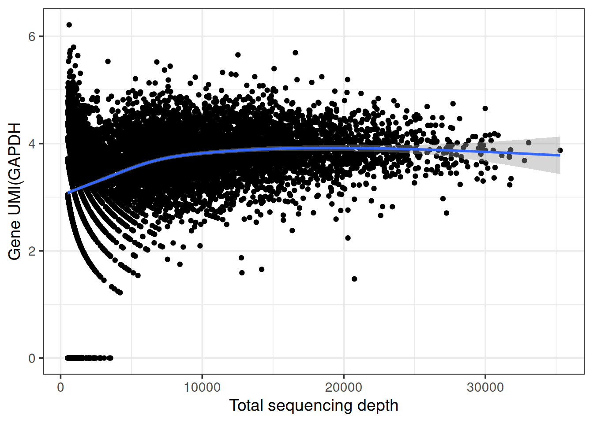
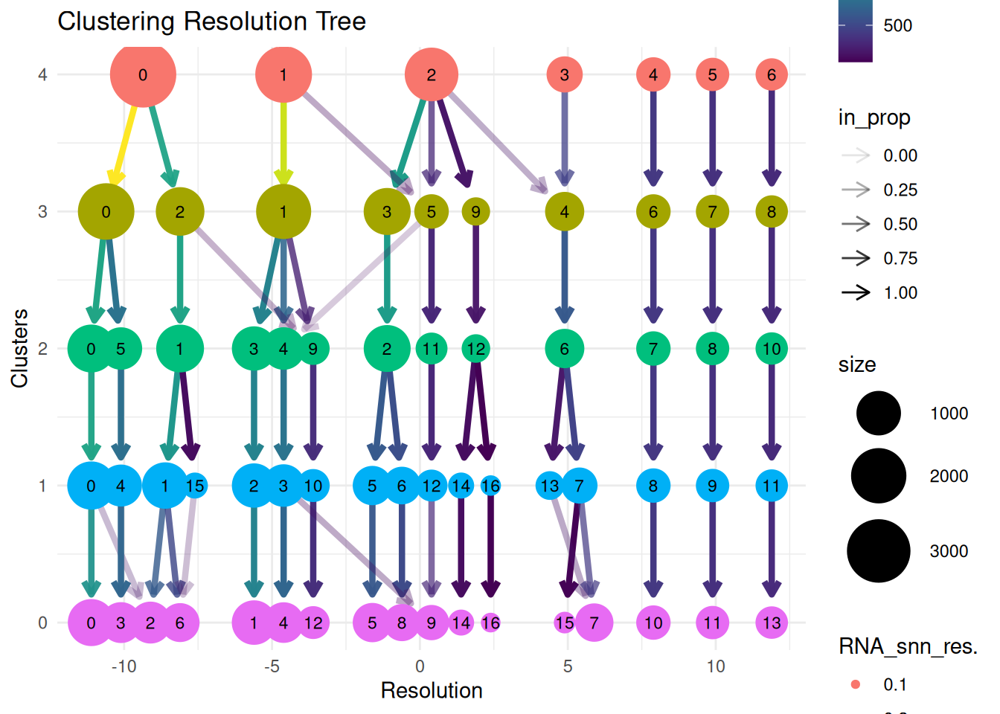

# Install required packages
install.packages(c("Seurat", "dplyr", "ggplot2", "robustbase", "tibble","viridis","SingleR","scRNAseq","patchwork",
"scater", "remotes", "harmony"))
# DoubletFinder is not available in Rs standard repositories, so we need to install it from GitHub
remotes::install_github('chris-mcginnis-ucsf/DoubletFinder')Single-Cell RNA-Seq Analysis with Seurat
1. Introduction to Single-Cell RNA Sequencing (scRNA-seq)
A variety of toolkits and analytical frameworks have been developed to facilitate scRNA-seq data analysis. Among the most widely used are Seurat, created by Rahul Satija’s lab for R, and scanpy, developed by Fabian Theis’s lab for Python. Both provide robust functions and extensive parameter sets that cover many of the routine analyses commonly performed on scRNA-seq data. However, it’s essential to recognize that these frameworks may not encompass all possible analyses, so exploring additional tools can broaden the scope of your data insights.
In this tutorial, aimed at beginners, we will primarily focus on using Seurat to analyze scRNA-seq data in R. Throughout this tutorial, we’ll introduce some additional tools that offer complementary functionalities beyond Seurat’s capabilities.
This tutorial assumes that preprocessing steps—such as base calling, mapping, and read counting—have already been completed. For data generated with the 10x Genomics Chromium Single Cell Gene Expression Solution, the Cell Ranger pipeline from 10x Genomics is commonly used, resulting in a count matrix. If your data is from a different technology (e.g., well-based experiments like Smart-Seq2), the Cell Ranger pipeline may not be applicable, and an alternative method will be required to generate the count matrix.
scRNA-seq Workflow
The typical workflow for scRNA-seq analysis includes: 1. Data loading and quality control 2. Normalization and scaling 3. Dimensionality reduction 4. Clustering and cell-type identification 5. Differential expression analysis
2. Setting Up the Environment
Required Packages
Before starting, ensure you have the following packages installed:
Loading Packages
# Load libraries
library(Seurat)
library(dplyr)
library(ggplot2)
library(robustbase)
library(scater)
library(DoubletFinder)
library(harmony)
library(patchwork)
library(scRNAseq)
library(SingleR)
library(tibble)
library(viridis)
sampleColors <- c("#2A363B", "#019875", "#99B898", "#FECEA8", "#FF847C", "#E84A5F",
"#C0392B", "#96281B","#B0C4B1", "#D9A441", "#577284", "#4A235A",
"#D7BDE2", "#8C6E63")3. Loading and Preprocessing Data
In this section, we will load a sample dataset and perform quality control to filter out low-quality and doublet cells.
Loading Data
We will use the four midbrain organoid samples sequenced using 10X scRNA-seq at two timepoints. The data set comes from this publication.
# List all directories within the "data/" directory, excluding the top-level "data/" itself.
dirs <- list.dirs("data/organoids/")[-1]
# This step makes sure that the "orig.ident" variable in your Seurat object will be informaticve.
names(dirs) <- c("day60-1","day60-2", "day30-1","day30-2")
# Read in the 10X Genomics data from each specified directory in 'dirs'.
# The 'Read10X' function reads the gene expression count data for each sample into one large matrix
da_diff.data <- Read10X(data.dir = dirs)
# Create a Seurat object with the count data. This is an essential structure in Seurat for
# storing and analyzing single-cell RNA-seq data.
# - 'min.cells = 3' filters out genes not expressed in at least 3 cells.
# - 'min.features = 200' filters out cells that have fewer than 200 detected genes.
da_diff <- CreateSeuratObject(counts = da_diff.data, min.cells = 3, min.features = 200)Quality Control
A number of factors should be examined before downstream analyses, many of which we’ll address here:
Low library size: When cells are very degraded or absent from the library preparation, the number of reads sequenced from that library will be very low. It’s important to remove these cells from downstream analyses.
Low number of expressed genes: A low number of expressed genes (which is highly correlated with low library size) may be a result of poor-quality cells (e.g. dying, degraded, damaged, etc.), followed by high PCR amplification of the remaining RNA. Again, these cells should be removed from downstream analyses.
High mitochondrial gene content: High concentrations of mitochondrial genes is often a result of damaged cells where the endogenous RNA escapes or degrades. As mitochondria has its own cell membranes, it is often the last DNA/RNA in damaged cells to degrade and hence occurs in high quantities during sequencing.
Fraction of reads originating from the mitochondria will be heavily dependent on if you’re sequencing cells or nuclei. mtRNA should not be present in nuclei preparations and is usually < 0.1%. For scRNA-seq 5-10% can be considered.
Batch effect: Large scRNA-seq projects usually need to generate data across multiple batches due to logistical constraints. However, the processing of different batches is often subject to variation, e.g., changes in operator, differences in reagent quality and concentration, the sequencing machine used, etc. This results in systematic differences in the observed expression in cells from different batches, which we refer to as “batch effects”. Batch effects are problematic as they can be major drivers of variation in the data, masking the relevant biological differences and complicating interpretation of the results.
Level 1 QC with Seurat
# Calculate the percentage of mitochondrial genes
da_diff[["percent.mt"]] <- PercentageFeatureSet(da_diff, pattern = "^MT-")
# Visualize QC metrics
VlnPlot(da_diff, features = c("nFeature_RNA", "nCount_RNA", "percent.mt"),
ncol = 3,pt.size = 0)+geom_hline(yintercept = 5, linetype = "dashed") & scale_fill_manual(values=sampleColors)Warning: Default search for "data" layer in "RNA" assay yielded no results;
utilizing "counts" layer instead.
Automated identification of cutoffs for filtering
# Create a matrix of selected statistics from da_diff for analysis
stats <- cbind(da_diff$percent.mt, da_diff$nFeature_RNA, da_diff$nCount_RNA)
# Calculate outlyingness scores for each cell based on the selected statistics
# only.outlyingness = TRUE returns only the outlyingness values
da_diff$outlying <- adjOutlyingness(stats, only.outlyingness = TRUE)
# Identify cells that are statistical outliers based on high outlyingness scores
outlier <- isOutlier(da_diff$outlying, type = "higher")
# Summarize the number of outliers identified
summary(outlier) Mode FALSE TRUE
logical 9208 946 # Add a column to da_diff indicating if each cell is an outlier
da_diff$is.outlier <- outlier
# Plot nFeature_RNA against nCount_RNA, coloring points by outlier status
# Facet by 'orig.ident' to visualize each sample separately
da_diff@meta.data %>%
ggplot(aes(x = nFeature_RNA, y = nCount_RNA, color = is.outlier)) +
geom_point(alpha = 0.6) +
scale_color_manual(values = c(sampleColors)) +
facet_wrap(~orig.ident) +
theme_minimal()
Doublet Removal
Doublets occur when two cells are captured together during single-cell RNA sequencing, leading to artificial readouts that can distort the analysis. Detecting and removing doublets is essential to ensure the integrity of downstream analyses, as they can introduce noise and misleading biological signals.
In tissues with distinct cell types, such as the brain, cells can be categorized into well-defined populations based on specific gene expression profiles. Each cell type has unique markers that facilitate the identification of doublets, as the combination of two different cell types will typically produce a distinct expression profile that can be detected by computational methods. For example, if a doublet is formed between a neuron and a glial cell, the resulting expression profile may reveal markers from both cell types, allowing for effective identification.
In contrast, datasets with continuous maturation feature cells that may share similar gene expression profiles but exist at different developmental stages or functional states. For instance, in a dataset capturing the maturation of immune cells, the transitional states between precursor cells and fully mature cells can be subtle, making it difficult to distinguish between single cells and doublets based on gene expression alone. The absence of distinct markers complicates the identification process, as the expected combined expression patterns of doublets may closely resemble those of mature cells.
Identifying and Removing Doublets
One common approach to identify doublets is using the DoubletFinder package in R. Below is a script demonstrating how to use this method on your Seurat object to identify and filter out doublets from your dataset. For this analysis with need to normalize and scale the data and also perform dimensionality reduction. We will cover these in more detail later.
# Normalize data
da_diff <- NormalizeData(da_diff)Normalizing layer: countsda_diff <- FindVariableFeatures(da_diff)Finding variable features for layer countsda_diff <- ScaleData(da_diff)Centering and scaling data matrixda_diff <- RunPCA(da_diff, verbose=FALSE)
# Perform doublet detection
da_diff <- doubletFinder(da_diff,
PCs = 1:20,
pK = 0.1,
nExp = round(0.05 * ncol(da_diff)),
reuse.pANN = FALSE)Loading required package: fieldsLoading required package: spamSpam version 2.10-0 (2023-10-23) is loaded.
Type 'help( Spam)' or 'demo( spam)' for a short introduction
and overview of this package.
Help for individual functions is also obtained by adding the
suffix '.spam' to the function name, e.g. 'help( chol.spam)'.
Attaching package: 'spam'The following object is masked from 'package:stats4':
mleThe following objects are masked from 'package:base':
backsolve, forwardsolve
Try help(fields) to get started.Loading required package: KernSmoothKernSmooth 2.23 loaded
Copyright M. P. Wand 1997-2009[1] "Creating 3385 artificial doublets..."
[1] "Creating Seurat object..."
[1] "Normalizing Seurat object..."Normalizing layer: counts[1] "Finding variable genes..."Finding variable features for layer counts[1] "Scaling data..."Centering and scaling data matrix[1] "Running PCA..."
[1] "Calculating PC distance matrix..."
[1] "Computing pANN..."
[1] "Classifying doublets.."da_diff@meta.data %>% ggplot(aes(x=nFeature_RNA, y=nCount_RNA, color=`DF.classifications_0.25_0.1_508`)) + geom_point() + scale_color_manual(values=c("black", "red"))+facet_wrap(~orig.ident+DF.classifications_0.25_0.1_508)Final Outlier Filtering
After identifying potential outliers and doublets, we can apply a final filtering step to exclude cells that are flagged as low quality or ambiguous. This final filter removes cells based on the previously calculated outlier status and doublet classification, ensuring that only high-quality, single-cell data remains for downstream analyses.
# Final filtering step to remove outliers and doublets
# Filter out cells that were flagged as outliers or doublets
da_diff.filter<- subset(da_diff, subset = !outlier & DF.classifications_0.25_0.1_508 != "Doublet")
# Summary of cells retained after filtering
print(paste("Number of cells before final filtering:", ncol(da_diff)))[1] "Number of cells before final filtering: 10154"print(paste("Number of cells retained after final filtering:", ncol(da_diff.filter)))[1] "Number of cells retained after final filtering: 8793"4. Normalization and Scaling
Normalization, finding variable features, and scaling are essential preprocessing steps to prepare the data for downstream analysis. Normalization corrects for differences in sequencing depth between cells, typically by transforming the raw counts into counts per cell or counts per million (CPM), followed by log transformation. This step ensures that expression levels are comparable across cells.
Finding variable features identifies genes with significant expression variability across cells, which is important because these genes often capture biologically meaningful patterns, while others contribute more noise. Variable features are selected based on metrics like variance or mean-variance relationships, providing a focused subset of genes for analysis. Scaling centers and scales the expression data, often by subtracting the mean and dividing by the standard deviation of each gene across cells. This step standardizes the gene expression values, making it easier to compare cell-to-cell variation and enhancing the performance of algorithms used in downstream analyses like dimensionality reduction and clustering. Together, these steps improve the accuracy and interpretability of scRNA-seq data.
The ScaleData function is used to scale and center expression data. This process standardizes the data by shifting the distribution of each gene’s expression across cells to have a mean of zero and a standard deviation of one. ScaleData adjusts for cell-to-cell variability by centering and scaling each gene individually. Using ScaleData is particularly useful for analyses like PCA, which are sensitive to differences in gene variance. It also has the flexibility to regress out certain sources of variation, such as mitochondrial gene content, cell cycle phase, or other unwanted sources of noise.
# Normalize data
da_diff.filter <- NormalizeData(da_diff)Normalizing layer: counts# Identify highly variable features
da_diff.filter <- FindVariableFeatures(da_diff.filter, selection.method = "vst", nfeatures = 2000)Finding variable features for layer countsVariableFeaturePlot(da_diff.filter) %>%
LabelPoints(points = head(VariableFeatures(da_diff.filter),n=20), repel = TRUE)When using repel, set xnudge and ynudge to 0 for optimal resultsWarning: ggrepel: 1 unlabeled data points (too many overlaps). Consider
increasing max.overlaps
# Scaling data
da_diff.filter <- ScaleData(da_diff.filter)Centering and scaling data matrix5. Dimensionality Reduction and Clustering
Principal Component Analysis (PCA)
After quality control, filtering and normalization, the next step in single-cell RNA sequencing analysis is usually to explore the structure of the data by grouping similar cells and visualizing these groupings in a reduced-dimensional space. This is achieved through dimensionality reduction and clustering.
Dimensionality reduction techniques help to condense complex, high-dimensional scRNA-seq data into fewer dimensions, making it easier to identify patterns and relationships among cells. Clustering algorithms then group cells with similar gene expression profiles, revealing potential cell types or states present in the dataset.
Principal Component Analysis (PCA) is one of the most commonly used dimensionality reduction methods in scRNA-seq analysis. PCA transforms the data by identifying principal components, which capture the axes of maximum variance in the data, thereby highlighting major sources of variation. Here, we run PCA on the filtered dataset using the most variable genes to capture the essential features of the data, selecting 50 principal components (PCs) to examine. The ElbowPlot function helps determine the number of PCs to retain by visualizing the point where adding more components provides diminishing returns in variance explained.
# Run PCA
da_diff.filter <- RunPCA(da_diff.filter,
features = VariableFeatures(object = da_diff.filter),
npcs = 50,
verbose = FALSE)
# Visualize PCA
ElbowPlot(da_diff.filter, ndims = 50)
Clustering and Visualization
Once we have a reduced representation of the data from PCA, we proceed with clustering to group cells based on their similarity. In this workflow, we use the FindNeighbors function to calculate the local neighborhood structure of cells based on their PCA coordinates, followed by FindClusters to assign each cell to a cluster. The resolution parameter is set to 0.5 to control the granularity of clusters, with higher values yielding more clusters.
In constructing the local neighborhood structure, FindNeighbors employs a Shared Nearest Neighbor (SNN) approach to refine the clustering accuracy. The SNN method goes beyond simple k-nearest neighbors by assessing the overlap of each cell’s neighborhood with those of other cells. Cells are considered more similar if they share multiple nearest neighbors, resulting in a weighted graph that highlights stronger connections between cells with high shared neighbor counts. This added layer of similarity enhances clustering stability by prioritizing dense regions of cells that share local neighborhoods, thereby emphasizing biologically relevant groupings in complex data.
To visualize these clusters, we apply Uniform Manifold Approximation and Projection (UMAP), which provides a 2D projection of the data, preserving local and some global structure in the clustering. The UMAP plot provides an intuitive visual of how cells are grouped, making it easier to explore potential cell types or states within the dataset.
# Find clusters
da_diff.filter <- FindNeighbors(da_diff.filter, dims = 1:10)Computing nearest neighbor graphComputing SNNda_diff.filter <- FindClusters(da_diff.filter, resolution = 0.5)Modularity Optimizer version 1.3.0 by Ludo Waltman and Nees Jan van Eck
Number of nodes: 10154
Number of edges: 325523
Running Louvain algorithm...
Maximum modularity in 10 random starts: 0.9146
Number of communities: 15
Elapsed time: 1 seconds# Run UMAP for visualization
da_diff.filter <- RunUMAP(da_diff.filter, dims = 1:10)Warning: The default method for RunUMAP has changed from calling Python UMAP via reticulate to the R-native UWOT using the cosine metric
To use Python UMAP via reticulate, set umap.method to 'umap-learn' and metric to 'correlation'
This message will be shown once per session10:08:31 UMAP embedding parameters a = 0.9922 b = 1.11210:08:31 Read 10154 rows and found 10 numeric columns10:08:31 Using Annoy for neighbor search, n_neighbors = 3010:08:31 Building Annoy index with metric = cosine, n_trees = 500% 10 20 30 40 50 60 70 80 90 100%[----|----|----|----|----|----|----|----|----|----|**************************************************|
10:08:32 Writing NN index file to temp file /tmp/Rtmpp8ajRM/file580125bd545e1
10:08:32 Searching Annoy index using 1 thread, search_k = 3000
10:08:35 Annoy recall = 100%
10:08:36 Commencing smooth kNN distance calibration using 1 thread with target n_neighbors = 30
10:08:37 Initializing from normalized Laplacian + noise (using RSpectra)
10:08:38 Commencing optimization for 200 epochs, with 404098 positive edges
10:08:42 Optimization finishedDimPlot(da_diff.filter, reduction = "umap", group.by = "seurat_clusters")+DimPlot(da_diff.filter, group.by = "orig.ident", reduction = "umap",cols = sampleColors)
FeaturePlot(da_diff.filter, features = c("STMN2","COL1A1","LMX1A"),order=T)+DimPlot(da_diff.filter, group.by = "orig.ident", reduction = "umap",cols = sampleColors,shuffle = T)Integration Using Harmony
When analyzing multiple datasets or batches, it’s crucial to account for batch effects that can obscure biological signals. The harmony algorithm provides an effective approach to integrating data from different sources while controlling for these batch effects.
Harmony works by iteratively adjusting the embeddings of cells in a lower-dimensional space, aligning them based on shared biological variation while minimizing differences caused by batch effects. This is achieved through a low-rank approximation of the data, which allows for the simultaneous consideration of both biological and technical sources of variation.
To integrate datasets using Harmony, we start by running PCA on each dataset separately. Once we have the PCA embeddings, we can pass them to the RunHarmony function, specifying the variable that represents the batch or dataset. Harmony then re-embeds the cells, producing a new PCA representation that mitigates batch effects while retaining the biological structure.
After integrating the datasets with Harmony, we can proceed with clustering and visualization using the adjusted embeddings. This integration enhances the robustness of downstream analyses, allowing for more accurate identification of cell types or states across datasets, and ensuring that biological signals are not overshadowed by batch variability.
# Integrate using Harmony
da_integrated <- RunHarmony(da_diff.filter, group.by.vars = "orig.ident")Transposing data matrixInitializing state using k-means centroids initializationHarmony 1/10Harmony 2/10Harmony 3/10Harmony 4/10Harmony 5/10Harmony converged after 5 iterations# Proceed with clustering and visualization on the Harmony-adjusted embeddings
da_integrated <- FindNeighbors(da_integrated, dims = 1:30, reduction = "harmony")Computing nearest neighbor graphComputing SNNda_integrated <- FindClusters(da_integrated, resolution = 0.1)Modularity Optimizer version 1.3.0 by Ludo Waltman and Nees Jan van Eck
Number of nodes: 10154
Number of edges: 401557
Running Louvain algorithm...
Maximum modularity in 10 random starts: 0.9565
Number of communities: 8
Elapsed time: 1 secondsda_integrated <- RunUMAP(da_integrated, reduction = "harmony", dims = 1:30)10:08:55 UMAP embedding parameters a = 0.9922 b = 1.11210:08:55 Read 10154 rows and found 30 numeric columns10:08:55 Using Annoy for neighbor search, n_neighbors = 3010:08:55 Building Annoy index with metric = cosine, n_trees = 500% 10 20 30 40 50 60 70 80 90 100%[----|----|----|----|----|----|----|----|----|----|**************************************************|
10:08:56 Writing NN index file to temp file /tmp/Rtmpp8ajRM/file58012cd9c6ac
10:08:56 Searching Annoy index using 1 thread, search_k = 3000
10:08:59 Annoy recall = 100%
10:09:00 Commencing smooth kNN distance calibration using 1 thread with target n_neighbors = 30
10:09:01 Initializing from normalized Laplacian + noise (using RSpectra)
10:09:02 Commencing optimization for 200 epochs, with 446538 positive edges
10:09:06 Optimization finished# Visualize the integrated data
DimPlot(da_integrated, reduction = "umap", group.by = "seurat_clusters") +
DimPlot(da_integrated, group.by = "orig.ident", reduction = "umap", cols = sampleColors)
6. Annotating Clusters
Clustering cells assigns an identity label to each one, allowing us to infer that cells with the same label are similar and likely represent the same cell type or state. Determining the specific cell types or states corresponding to these clusters can be challenging, and there is often no definitive answer. However, several approaches can help clarify this issue:
Examine the expression of canonical cell type and cell state markers within the clusters. This method relies on established knowledge of well-characterized markers in the field.
Identify signature or marker genes for each cell cluster. Once these genes are determined, literature searches, enrichment analyses, or experimental validations can be conducted to further refine annotations.
Compare the gene expression profiles of the clusters with existing reference datasets. This can provide additional context for identifying the nature of the clusters.
It is important to note that the first method requires prior knowledge of the system being studied, including a comprehensive list of accepted markers relevant to the context. For instance, in the context of differentiating dopamine neurons from stem cells, several suitable marker genes have been identified, including:
- MKI67, TOP2A, CENPF: Genes involved in the cell cycle, often used to mark proliferating cells.
- SOX2, HES1, NES: Key genes associated with neurogenesis, marking neural stem or progenitor cells.
- FABP7, SHH, CORIN, FOXA2, LMX1B, OTX2: Markers of floor plate progenitors, important for specifying ventral midbrain neurons.
- TH, EN1, PBX1, STMN2: Genes involved in dopamine (DA) neurogenesis; critical for identifying dopamine neuron lineage and development.
- AQP4, GFAP, EDNRB, GJA1: Markers of astrocytes, essential for identifying and studying astrocytic populations.
- COL1A1, COL1A2: Genes associated with vascular and leptomeningeal cells (VLMCs), playing a role in extracellular matrix formation and support.
These genes serve as a starting point for assessing the identity of dopamine neurons in clusters derived from stem cell differentiation.
6.1 Canonical Markers
# Canonical markers for dopamine neurons
genes <- c(
"MKI67","TOP2A","CENPF", # Cell cycle
"SOX2", "HES1", "NES", # Neurogenesis
"FABP7", "SHH", "CORIN", "FOXA2", "LMX1B", "OTX2", # Floor plate progenitors
"TH", "EN1", "PBX1", "STMN2", # DA neurogenesis
"AQP4", "GFAP", "EDNRB", "GJA1", # Astrocyte
"COL1A1", "COL1A2" # VLMC
)
# Violin plot for canonical markers
DotPlot(da_integrated, features = genes,dot.scale = 8)+
#Rotate x axis labels
theme(axis.text.x = element_text(angle = 90, hjust = 1))+
# Update colors to something prettier
viridis::scale_color_viridis(direction = -1)Scale for colour is already present.
Adding another scale for colour, which will replace the existing scale.
# Define gene modules as a list
gene_modules <- list(
Cell_Cycle = c("MKI67", "TOP2A", "CENPF"),
Neurogenesis = c("SOX2", "HES1", "NES"),
Floor_Plate_Progenitors = c("FABP7", "SHH", "CORIN", "FOXA2", "LMX1B", "OTX2"),
DA_Neurogenesis = c("TH", "EN1", "PBX1", "STMN2"),
Astrocyte = c("AQP4", "GFAP", "EDNRB", "GJA1"),
VLMC = c("COL1A1", "COL1A2")
)
for(i in names(gene_modules)) {
da_integrated <- AddModuleScore(object = da_integrated,
features = list(gene_modules[[i]]),
name = i)
}
plot_list <- list()
# Plot each module score individually
for (module in paste0(names(gene_modules),"1")) {
p <- FeaturePlot(
da_integrated,
features = module,
reduction = "umap", # or the dimensionality reduction method you are using
pt.size = 1,
order = TRUE,
label = TRUE,
cols = c("lightgrey", "darkred"),
min.cutoff = "q9"
) + NoLegend() + ggtitle(paste(module))
plot_list[[module]] <- p
}
# Combine plots using patchwork
wrap_plots(plot_list, ncol = 2)6.2 Identifying Marker Genes
# Find markers for each cluster
da_diff.markers <- FindAllMarkers(da_integrated, only.pos = TRUE,
min.pct = 0.25, logfc.threshold = 0.25)Calculating cluster 0Calculating cluster 1Calculating cluster 2Calculating cluster 3Calculating cluster 4Calculating cluster 5Calculating cluster 6Calculating cluster 7# downsample to 100 cells per cluster
da_integrated.subsampled.metadata <- da_integrated@meta.data %>% rownames_to_column() %>% group_by(seurat_clusters) %>% sample_n(50)
# top 20 genes per cluster
da_diff.markers.top <- da_diff.markers %>% group_by(cluster) %>% top_n(10, avg_log2FC) %>% arrange(cluster, avg_log2FC) %>% pull(gene)
# Heatmap for canonical markers
da_integrated <- ScaleData(da_integrated, features = da_diff.markers.top)Centering and scaling data matrixWarning: Different features in new layer data than already exists for
scale.dataDoHeatmap(da_integrated, features = da_diff.markers.top, group.by = "seurat_clusters",cells =da_integrated.subsampled.metadata$rowname)
6.3 Automated annotation using singleR
# Find markers for each cluster
la_manno_ref <- LaMannoBrainData(which = "human-embryo")
logcounts(la_manno_ref) <- log2(counts(la_manno_ref)+1)
# Run SingleR to classify cells
singleR_results <- SingleR(
test = as.SingleCellExperiment(da_integrated),
ref = la_manno_ref,
labels = la_manno_ref$Cell_type
)
# Add SingleR predictions as metadata to Seurat object
da_integrated$SingleR_label <- singleR_results$labels
# Visualize SingleR predictions
DimPlot(da_integrated, group.by = "SingleR_label", reduction = "umap",label = T)
# Calculate percentage of each cell type
cell_type_counts <- table(da_integrated$SingleR_label)
# Update metadata to include only cell types above threshold
da_integrated$Filtered_SingleR_label <- ifelse(
da_integrated$SingleR_label %in% names(cell_type_counts[cell_type_counts > 200]),
da_integrated$SingleR_label,
NA # or use "Other"
)
# UMAP plot with filtered cell types
DimPlot(da_integrated, group.by = "Filtered_SingleR_label", label = TRUE, na.value = "grey") +
ggtitle("Filtered Cell Type Classification ( > 200 cells)") 8. Custom Visualizations
# Customize UMAP with cluster annotations
#DimPlot(da_diff.filter, reduction = "umap", label = TRUE) + ggtitle("UMAP with Cluster Labels")9. Extras
Identifying number of clusters
The resolution parameter in Seurat’s FindClusters function controls the granularity of clustering, with higher resolutions producing more fine-grained clusters. However, determining the optimal resolution can be challenging, especially when biological relevance is not immediately apparent.
The clustree package provides a powerful visualization tool to assess how clusters evolve across different resolutions. By creating a tree-like structure, clustree highlights how clusters merge or split as resolution changes, aiding in the identification of biologically meaningful patterns. This section demonstrates how to generate clustering solutions at multiple resolutions and visualize them using clustree.
# Load required libraries
#install.packages(c("clustree"))
library(clustree)Loading required package: ggraph
Attaching package: 'ggraph'The following object is masked from 'package:sp':
geometry# Perform clustering for a range of resolutions
resolutions <- seq(0.1, 1, by = 0.2) # Define a range of resolutions
da_diff <- FindNeighbors(da_diff, dims = 1:10) # Identify cell neighborsComputing nearest neighbor graphComputing SNNfor (res in resolutions) {
da_diff <- FindClusters(
da_diff,
resolution = res, # Specify the current resolution
verbose = FALSE # Suppress output
)
}
# clustree visualization
clustree(da_diff@meta.data, prefix = "RNA_snn_res.") +
theme_minimal() +
ggtitle("Clustering Resolution Tree") +
xlab("Resolution") +
ylab("Clusters")
In addition to clustree, other methods like silhouette analysis can help assess the quality and biological relevance of clustering results. Silhouette analysis provides a metric that quantifies how well a cell fits within its assigned cluster compared to neighboring clusters. A high silhouette width indicates well-separated clusters, while a low or negative silhouette width suggests overlapping or poorly defined clusters.
Silhouette anaylis can be used both to asses the stability of a given clustering results but also to find the optimal number of clusters by optimizing the overall silhouette score.
Here we will use silhouette analysis to look at the stability of the clustering results at a given resolution.
# Load required libraries
library(cluster)
# Choose a resolution for clustering
da_diff <- FindClusters(da_diff, resolution = 0.1)Modularity Optimizer version 1.3.0 by Ludo Waltman and Nees Jan van Eck
Number of nodes: 10154
Number of edges: 325523
Running Louvain algorithm...
Maximum modularity in 10 random starts: 0.9605
Number of communities: 6
Elapsed time: 1 seconds# Extract the cluster assignments and the PCA coordinates
clusters <- da_diff$seurat_clusters # Cluster labels
pca_coords <- Embeddings(da_diff, reduction = "pca")[, 1:10] # PCA coordinates (first 10 dimensions)
# Compute the silhouette width
sil <- silhouette(as.numeric(clusters), dist(pca_coords))
# Convert silhouette object to a data frame for visualization
sil_df <- as.data.frame(sil[, 1:3]) # Columns: cell ID, cluster, silhouette width
colnames(sil_df) <- c("Cluster", "Neighboring_Cluster", "Silhouette_Width")
sil_df$Cluster <- as.factor(sil_df$Cluster)
# Plot silhouette widths for each cluster
ggplot(sil_df, aes(x = Cluster, y = Silhouette_Width, fill = Cluster)) +
geom_boxplot() +
labs(
title = "Silhouette Analysis of Clusters",
x = "Cluster",
y = "Silhouette Width"
) +
theme_minimal()
Cell Cycle Analysis
Cell cycle phase can be a significant source of variation in scRNA-seq data, influencing gene expression patterns and clustering results. To account for this, we can use the CellCycleScoring function in Seurat to assign a cell cycle phase to each cell based on the expression of cell cycle-related genes. This information can then be used to adjust for cell cycle effects in downstream analyses.
For each cell, CellCycleScoring calculates the S.Score and G2M.Score by averaging the expression of predefined S-phase and G2/M-phase marker genes, respectively. These scores quantify the activity of phase-specific genes, providing a basis for classification. A cell is assigned to the S-phase if the S.Score exceeds the G2M.Score, to the G2/M-phase if the G2M.Score is higher, and to the G1-phase if both scores are low, indicating quiescence or non-dividing status. This classification captures cell cycle progression with a straightforward scoring comparison.
# Load predefined cell cycle gene sets from Seurat
s.genes <- Seurat::cc.genes.updated.2019$s.genes # Genes associated with S-phase
g2m.genes <- Seurat::cc.genes.updated.2019$g2m.genes # Genes associated with G2/M-phase
# Perform cell cycle scoring
da_diff <- CellCycleScoring(
da_diff, # Seurat object to classify
s.features = s.genes, # Gene set for S-phase
g2m.features = g2m.genes, # Gene set for G2/M-phase
set.ident = TRUE # Update cell identities based on the predicted phase
)
# View the resulting cell cycle scores
head(da_diff@meta.data[, c("S.Score", "G2M.Score", "Phase")]) S.Score G2M.Score Phase
day60-1_AAACCTGCACCAGCAC-1 0.02163181 -0.07500626 S
day60-1_AAACCTGGTATTCTCT-1 -0.08589155 -0.04710542 G1
day60-1_AAACCTGTCAGTTTGG-1 -0.04899818 -0.06920146 G1
day60-1_AAACCTGTCCGCTGTT-1 0.00775112 -0.03148135 S
day60-1_AAACCTGTCGCAAGCC-1 -0.05884907 -0.04467206 G1
day60-1_AAACGGGAGATGTAAC-1 -0.04536919 -0.02004708 G1# Visualize the distribution of cell cycle phases
table(da_diff$Phase) # Count cells in each phase
G1 G2M S
6121 1297 2736 DimPlot(da_diff, group.by = "Phase") # Plot cells grouped by their predicted cell cycle phaseSpecicies classification
In some scRNA-seq experiments, cells may be derived from multiple species, such as human-mouse xenografts. We will start by creating the seurat object.
# Read the 10X Genomics data
graft.data <- Read10X(data.dir = "data/grafts/G1_YZ013_SD_no12/")
# Remove the "grch38_" prefix from gene names for easier readability
rownames(graft.data)<-gsub("premRNAGRCH38-","",rownames(graft.data))
# Create a Seurat object with the count data
graft <- CreateSeuratObject(counts = graft.data, min.cells = 3, min.features = 200)Warning: Feature names cannot have underscores ('_'), replacing with dashes
('-')Next step is to use the 10X classification to assign the cells based on the species they belong to.
# Calculate the total counts for Rat-specific features
# Extract features matching the Rat pattern ("premRNARnor6--") from the "counts" layer and sum them row-wise
graft$RatCounts <- rowSums(FetchData(graft, vars = grep("^premRNARnor6--", rownames(graft),
invert = FALSE, value = TRUE), layer = "counts"))
# Calculate the total counts for Human-specific features
# Extract features NOT matching the Rat pattern ("premRNARnor6--") from the "counts" layer and sum them row-wise
graft$HumanCounts <- rowSums(FetchData(graft, vars = grep("^premRNARnor6--", rownames(graft),
invert = TRUE, value = TRUE), layer = "counts"))
# Compute the percentage of counts attributed to Rat-specific features
graft$PercentRat <- PercentageFeatureSet(graft, pattern = "^premRNARnor6--")
# Compute the percentage of counts attributed to Human-specific features
# Use the set of features that do not match the Rat-specific pattern
graft$PercentHuman <- PercentageFeatureSet(graft, features =
grep("^premRNARnor6--", rownames(graft), invert = TRUE))
# Classify cells into species based on the percentage of Rat-specific features
graft$Species <- case_when(
graft$PercentRat < 20 ~ "Human", # Less than 20% Rat features indicates a Human cell
graft$PercentRat > 80 ~ "Rat", # More than 80% Rat features indicates a Rat cell
TRUE ~ "Unknown" # Anything in between is classified as "Unknown"
)
# Generate a scatter plot showing Rat counts vs. Human counts
# Group the points by the classified species
FeatureScatter(graft, feature1 = "RatCounts", feature2 = "HumanCounts", group.by = "Species") +
ggtitle("Species Classification") + # Add a title to the plot
xlab("Rat Counts") + # Label the x-axis
ylab("Human Counts") # Label the y-axis
# Create a subset of the Seurat object containing only cells classified as "Human"
graft.human <- subset(graft, subset = Species == "Human")
# And you can start with QC and so on...